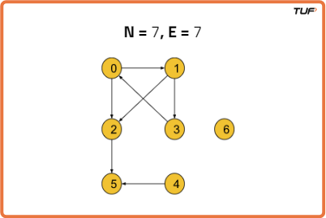
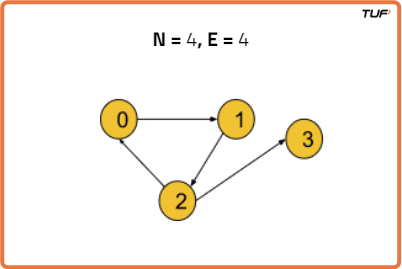
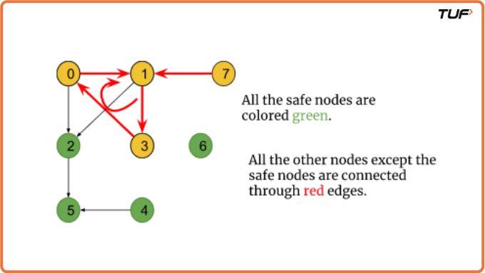
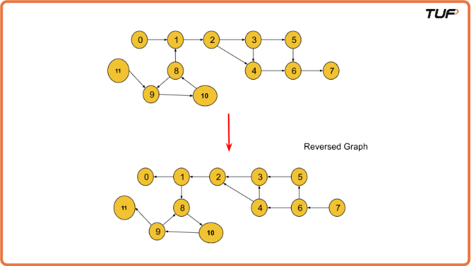

Find Eventual Safe States - BFS - Topological Sort: G-25
Problem Statement: A directed graph of V vertices and E edges is given in the form of an adjacency list adj. Each node of the graph is labeled with a distinct integer in the range 0 to V - 1. A node is a terminal node if there are no outgoing edges. A node is a safe node if every possible path starting from that node leads to a terminal node. You have to return an array containing all the safe nodes of the graph. The answer should be sorted in ascending order.
Examples
Example 1: Input Format: N = 7, E = 7
Result: {2 4 5 6} Example 2: Input Format: N = 4, E = 4
Result: {3}
Disclaimer: Here is the practice link to help you assess your knowledge better. It's highly recommend trying to solve it before looking at the solution.
Approach
Algorithm
In a directed graph, a terminal node is defined as a node that has no outgoing edges (i.e., its outdegree is 0). A node is considered a safe node if every possible path starting from it eventually leads to a terminal node and does not enter any cycle.
If a node is part of a cycle or leads to a cycle via an outgoing path, then that node cannot be considered safe. In simpler terms, a node is safe if it does not contribute to or connect into a cycle.
Let’s understand this using the graph below:

- In the graph, a cycle exists: 0 → 1 → 3 → 0. Node 7 has an edge leading into this cycle.
- Any path from nodes 0, 1, 3, or 7 could result in entering this cycle. Hence, they are not safe.
- Node 2 connects outward from the cycle and leads to terminal node 5. Since all paths from 2 reach a terminal node, it is considered safe.
- Nodes 4, 5, and 6 are also safe because they do not lead into any cycle and eventually end at terminal nodes.
The key insight is to identify nodes that are neither part of a cycle nor have paths that lead into a cycle. We can accomplish this using traversal algorithms like DFS or BFS. In this explanation, we focus on using BFS with Topological Sort to detect safe nodes.
The topological sorting method naturally excludes cyclic paths, and thus helps identify nodes that are guaranteed to lead to terminal states.
Note: Any node that is in a cycle or leads into a cycle through a directed edge cannot be a safe node. All other nodes are safe.
Approach:
Topological sort generally uses indegree (number of incoming edges), whereas terminal nodes are detected using outdegree (number of outgoing edges). To align this with topological sort logic, we reverse all edges in the graph so that terminal nodes become nodes with indegree 0.

We use the BFS (Breadth-First Search) traversal technique to process the graph level-by-level. The steps are as follows:
- Step 1: Reverse all edges of the graph so we can apply topological sort based on indegrees.
- Step 2: Create an
indegree[]array initialized to 0. Count the incoming edges for each node and store them accordingly. - Step 3: Initialize a queue and enqueue all nodes with indegree 0 — these are now our terminal nodes in the reversed graph.
- Step 4: Create an empty list
safeNodes[]to store all safe nodes. - Step 5: While the queue is not empty:
- Pop a node
ufrom the queue and add it tosafeNodes. - For each neighbor
vof nodeuin the reversed graph, reduceindegree[v]by 1. - If
indegree[v]becomes 0, push it into the queue.
- Pop a node
- Step 6: Repeat this process until the queue is empty.
- Step 7: The
safeNodeslist now contains all the nodes that are not part of any cycle and do not connect into one. - Step 8: Sort the
safeNodesarray before returning it, as the problem requires output in ascending order.
Code
#include <bits/stdc++.h>
using namespace std;
class Solution {
public:
// Function to find all eventual safe nodes in a directed graph
vector<int> eventualSafeNodes(int V, vector<int> adj[]) {
vector<int> adjRev[V]; // Reverse adjacency list
int indegree[V] = {0}; // Indegree array to track nodes with no outgoing edges
// Build the reverse graph and calculate indegrees
for (int i = 0; i < V; i++) {
for (auto it : adj[i]) {
adjRev[it].push_back(i); // Reverse the direction of edges
indegree[i]++; // Increment indegree for the current node
}
}
queue<int> q; // Queue to store nodes with no outgoing edges (safe nodes)
vector<int> safeNodes;
// Add all nodes with 0 indegree to the queue
for (int i = 0; i < V; i++) {
if (indegree[i] == 0) {
q.push(i);
}
}
// Process the queue to find all safe nodes
while (!q.empty()) {
int node = q.front();
q.pop();
safeNodes.push_back(node); // This node is safe
for (auto it : adjRev[node]) {
indegree[it]--; // Decrease indegree of the parent nodes
if (indegree[it] == 0) {
q.push(it); // If indegree becomes 0, it is a safe node
}
}
}
sort(safeNodes.begin(), safeNodes.end()); // Sort the safe nodes
return safeNodes;
}
};
int main() {
// Adjacency list representation of the graph
vector<int> adj[12] = {{1}, {2}, {3, 4}, {4, 5}, {6}, {6}, {7}, {}, {1, 9}, {10},
{8}, {9}};
int V = 12; // Number of nodes in the graph
Solution obj;
vector<int> safeNodes = obj.eventualSafeNodes(V, adj); // Call function to get safe nodes
for (auto node : safeNodes) {
cout << node << " "; // Print the safe nodes
}
cout << endl;
return 0;
}
Complexity Analysis
Time Complexity: O(V + E) + O(N log N),
O(V + E)for performing BFS on the graph (whereV= number of vertices/nodes,E= number of edges).O(N log N)for sorting thesafeNodesarray (whereNis the number of safe nodes).
Space Complexity: O(3N) ~ O(N),
O(N)for the indegree array.O(N)for the queue used during BFS traversal.O(N)for the reversed adjacency list representation of the graph.